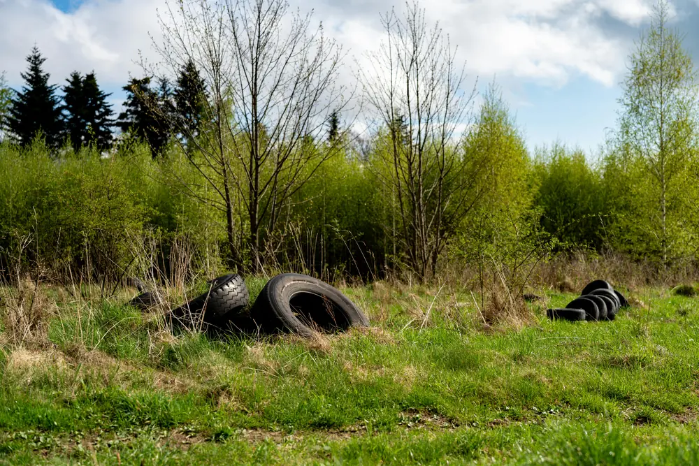

Enforcement Training
Practical, PACE compliant training designed for real world enforcement. Focused on evidence gathering, interviews and building prosecution ready cases.

Operational support, training and system improvement for Environmental Protection teams facing increasing demand and workforce challenges.
Prevent escalation. Stabilise hotspots. Deliver consistent enforcement outcomes.
Environmental crime rarely appears at scale overnight. It develops through repeated activity, delayed intervention and inconsistent enforcement response.
A recent case in Oxfordshire showed how initial reports escalated into a large scale illegal waste site requiring multi agency enforcement.

Practical, PACE compliant training designed for real world enforcement. Focused on evidence gathering, interviews and building prosecution ready cases.
Many councils continue to manage abandoned vehicles through slow, multi step processes that delay action, increase workload and limit financial recovery.
Traditional approaches rely on repeated visits, delayed DVLA responses and contractor led removal, resulting in inefficiency and limited control over outcomes.
Drawing on recent local authority experience, we redesigned the abandoned vehicle process to significantly reduce officer time and improve outcomes.
This approach has been shared with multiple authorities facing similar challenges, particularly where legacy processes and contract arrangements limit flexibility.
If your current process is resource intensive or slow to respond, we can review and redesign your approach to improve efficiency and outcomes.
Case Study
Strengthening frontline capability and embedding consistent enforcement practices across teams.
Discuss a Similar Approach
Case Study
Structured lifecycle approach aligning enforcement, legislation and financial control.
Discuss Vehicle Enforcement SupportExperience
Environmental Protection across UK local government.
Frontline enforcement, service management and mentoring.
Fly tipping, vehicles and environmental crime enforcement.
Approach
Review risks and processes.
Address backlog and consistency.
Training and mentoring.
Policies and long term resilience.
Discuss your requirements and current challenges.
Contact Now